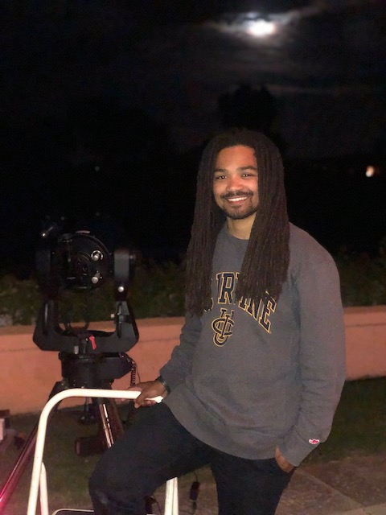

About me
“I... a universe of atoms, an atom in the universe.” ― Richard P. Feynman
Dr. Devontae C. Baxter
I was born in Atlanta, Georgia and graduated from Stockbridge High School. I began my higher education journey in 2012 at what was formerly known as Georgia Perimeter Community College (now Georgia State University: Perimeter College.) In 2015, I transferred to Georgia Institute Technology (GT) and went on to graduate in 2017 with a B.S. in Physics and minor in Spanish. During my time at GT, I was awarded the Georgia Hope and AMC Cares Scholarships for outstanding academic performance and service to my community.
Next, I was a Eugene Cota-Robles, National Osterbrook Leadership (NOLP) Program, and LSSTC Data Science Fellowship Program (DSFP) Fellow at the University of California, Irvine, where I earned a PhD in Physics studying under the supervision of Professor Michael C. Cooper. My PhD thesis focused on inferring the drivers of environmental quenching in galaxy groups and clusters via modeling and supervised machine learning.
Currently, I am a dual NSF Astronomy & Astrophysics and UC Chancellor's Postdoctoral Fellow at the University of California, San Diego. My current research focus lies in understanding the redshift and halo mass dependence of environmental quenching, and the role that protocluster environments play in shaping galaxy properties. Additionally, I am passionate about mentorship and outreach. I am currently developing the Computational Astrophysics Research Preparation (CARP) program in which I will host coding and mentorship workshops for prospective transfer students at community colleges in San Diego. The goal of this program is to provide these students with programming skills and relevant mentorship to support their transition to a four-year institution.
Outside of work, I enjoy rediscoving the beauty of this existence through by daughter's eyes, skateboarding, learning new langauges, hiking, reading, and watching anime.